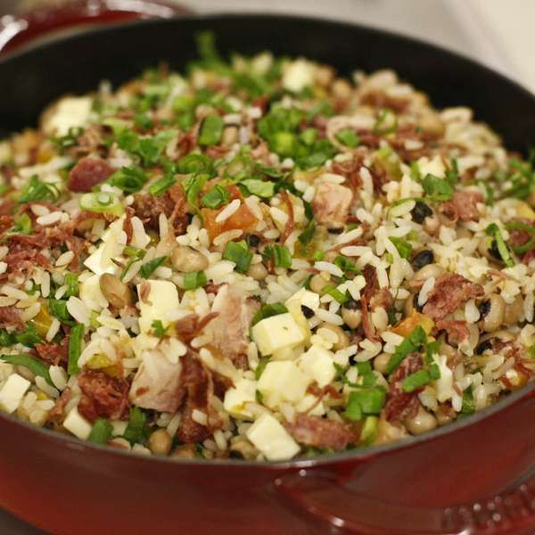
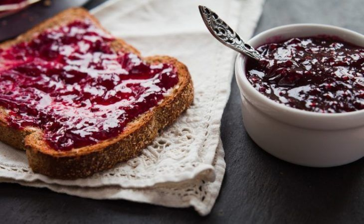
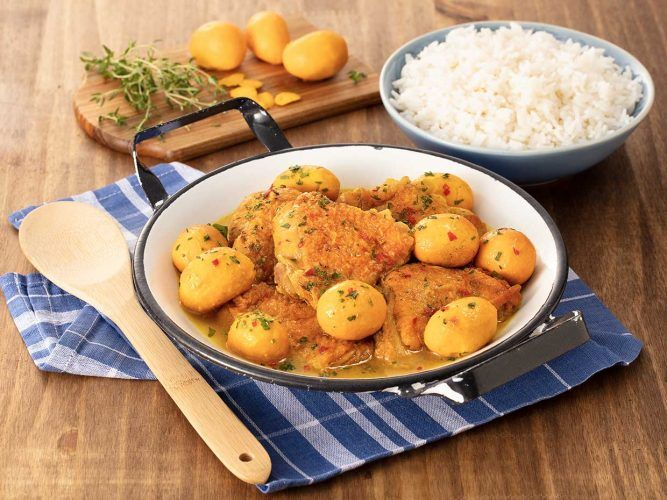

Typical Foods
Brazil has a variety of typical foods, each state has a variety of foods and these states are divided into regions, so only one food from each region that all states in that region have in common will be addressed.
Northeast Region
Baião de Dois: It is a dish made of rice, beans, dried meat and curd cheese. There are those who say that the origin of the name is due to the typical northeastern dance, the baião. Baião, as it is a mixture of two popular and easily accessible elements of Brazilian cuisine, rice and beans, is very common in rural areas.
North Region
Tacacá: It is of indigenous origin. Prepared with a yellowish broth called tucupi. This broth is poured over the manioc gum, also served with jambu (an Amazonian herb that causes numbness in the mouth) and dried shrimp. It is served very hot, seasoned with pepper, in gourds.

South Region
Chimia: are different types of food that can be spread on bread. Schmier can also mean a slice of bread already spread with any food, whether with Schmier/sweet, jam, honey, butter, margarine, cream, pâté. It can be made in a variety of flavors using peels, fruits, or other combinations.
Midwest Region
Chicken with Pequi: chicken with pequi is one of those typical dishes in which the fruit brings out its striking flavor and color. In traditional chicken dishes, free-range chicken is fundamental and must be sautéed to bring even more flavor and then eaten with seasonings. The pequi must be cooked separately.
Southeast Region
Cheese bread: it is a small baked cheese roll or cheese bread, a popular snack and breakfast, it is also very common in grocery stores, supermarkets and bakeries, industrialized or freshly made. Despite being called “bread”, cheese bread is basically a type of flour or sweet biscuit with eggs, salt, vegetable oil and cheese, with a soft and elastic consistency and with some variations.

An honorable mention has to be made of the Brigadeiro, a sweet dessert. It is made of condensed milk, cocoa powder, butter, and chocolate sprinkles covering the outside layer. It is a popular confection throughout the country, especially for festive events. Brigadeiros are commonly made at home, and also found in bakeries and snack shops.